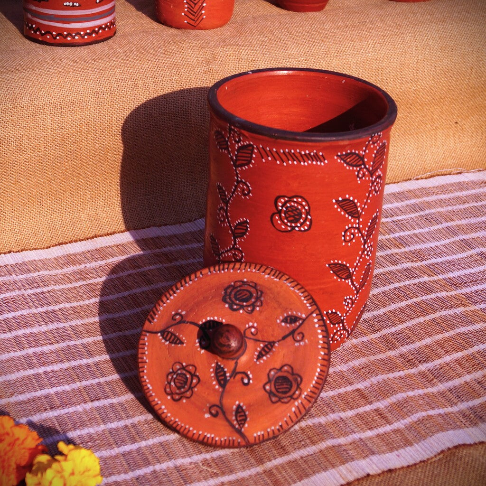

Clay & PotteryPhoto: Hand-Painted Kutch Pottery Dry-Food Storage Jar Canister · Source and licence
Madurai region · Tamil Nadu
Painted Red-Clay Storage Jar
₹2,250
A lidded storage jar concept with a painted border over warm red clay. The silhouette balances a wide body with an easy-to-lift lid; confirm whether the interior is sealed and what contents it can safely hold. Potters prepare the clay, shape the walls, dry the form evenly and fire it. Handmade variations in shade, rim and profile are part of the process. Prototype listing: price and dimensions are estimates for this project and must be confirmed with the maker before purchase.
MATERIALSTerracotta clay and mineral colour
TECHNIQUEWheel formed and hand painted
APPROX. DIMENSIONS32 × 22 × 22 cm (approx.)
AVAILABLE STOCK8 pieces
க
MAKERTN ARTISAN Studio
Clay & Pottery
Customer reviews
No reviews yet.